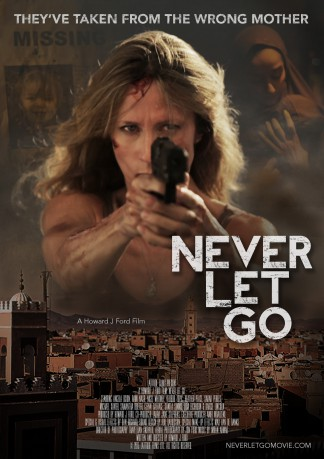

#6519 Taken in Marokko - Die Marrakesch Verschwörung
Alternativ: Never Let Go
 gesehen am 05.07.2017
gesehen am 05.07.2017
 
 IMDB-Wertung: 5.4 / 10
IMDB-Wertung: 5.4 / 10  Metascore: 0
Metascore: 0 
A single mother desperately searches for her missing child in a beautiful, but unfamiliar land, following an apparent abduction. Trusting no one, and stopping at nothing, as she weaves her way through the murky backstreet's and barren landscapes, now implicated in the murder of a seemingly innocent man, her connections back in the US begin to reveal that there is much more at stake than first meets the eye..
Jahr: 2015
Dauer: 93 Minuten
FSK: 16
Land: USA Studio: InterfilmTonspuren: DTS - ,
Untertitel:
Auflösung: 1080p (1920x1080) Größe: 5877 MB
Genre: Thriller, Drama
Regisseur: Howard J. Ford
Drehbuch: Howard J. Ford
Soundtrack:
Darsteller:
- Angela Dixon als Lisa Brennan
 Nigel Whitmey als Clark Anderson
Nigel Whitmey als Clark Anderson Lisa Eichhorn als Maria Brennan
Lisa Eichhorn als Maria Brennan Velibor Topic als Vladislav
Velibor Topic als Vladislav- Heather Peace als Jeanette Burrows
- Rami Nasr als Hassan
- Sarah Perles als Bouchra
- Samantha Bolter als Emma
- Michael Xavier als Tom
- Sanita Simms als Amina
- Darcie Lincoln als Erin Sonders
- Zoe Harrison als Young Maria
- Steve Hope Wynne als Lisa's father
- Fabian Passamonte als The Driver
- Glenn Salvage als Dimitri
- Katie Knight Adams als Clark's wife
- Layla May Thom-Chew als Baby Sophie
- Joan Fontanet als Lead Officer
- Willow Rideout als Young Lisa
- Jonathan Ford als Paul Vidmar
- Alexandra Octavia als Female Officer
- Felix Ford als Jake
- Lindsay Groves als Arresting officer
- Karima El Bakkouchi als Receptionist
- Rachid Lahlali als Amina's Father
- Charif Omar als Policeman
- Malika Elansari als Wife
- Samy Perles als Lead Policeman
- Guillermo Willy Acuña als Policeman, Mallorca
- Abdellah Aitouarah als Husband
- Karyn Astle als Lady in crowd
- Achnag Azdoud als Policeman, Marrakech
- Larbi Banou als Little boy, Morocco
- Rachel Barton als Supporter in crowd
- Mostapha Belkhalfi als Policeman, Marrakech
- Rob Buckingham als Guy in crowd
- Julie Claxton als Campaign supporter
- Kevin Claxton als Campaign supporter
- Youssef Daddo als
- Peter Davies als Man in crowd
- Rebecca Davies als Lady in crowd
- Ana Del Campo als Female campaign supporter
- Neil Dorrell als Male Bodyguard
- Abdellah Elfirdaoui als Husband
- Anthony Faulner als Special agent
- Ndjimi Feumba als Campaign supporter
- Anne Charlotte Fleury als Female Supporter
- Axelle Fleury als Female supporter
- Alicia Ford als Woman in crowd
- Amanda Ford als Photographer in crowd
Datei: X:\2015(N-Z)\Taken in Marokko - Die Marrakesch Verschwörung (2015, FSK16, 1920x1080).mkv seit 05.07.2017
Festplatte: HD 2015(A-Z)
 Es gibt insgesamt 161 Filme in der Gruppe '2015(N-Z)'
Es gibt insgesamt 161 Filme in der Gruppe '2015(N-Z)'